大魯閣草衙道
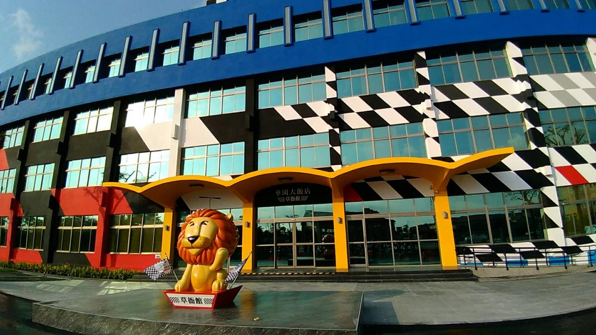
華園大飯店草衙館(3星)
地址：高雄前鎮區中安路1號
華園大飯店草衙館位於高雄，距離六合觀光夜市不到 7 公里，距離真愛碼頭 8 公里，館內設有餐廳、全館免費 WiFi 以及免費私人停車位。此住宿設有家庭房，還為客人提供兒童遊樂區。館內提供 24
小時接待櫃台和禮賓服務，並可為客人安排行程。
所有客房均設有衣櫃、平面電視和私人衛浴。
華園大飯店草衙館提供歐陸式或自助式早餐。
華園大飯店草衙館距離高雄市立歷史博物館 8 公里，距離駁二藝術特區 9 公里。最近的機場是高雄國際機場，距離 3.6 公里。
前鎮區是觀光、觀光景點、風景的絕佳選擇。
情侶特別喜歡這個位置－並給他們的雙人旅行住宿體驗 8.7 分
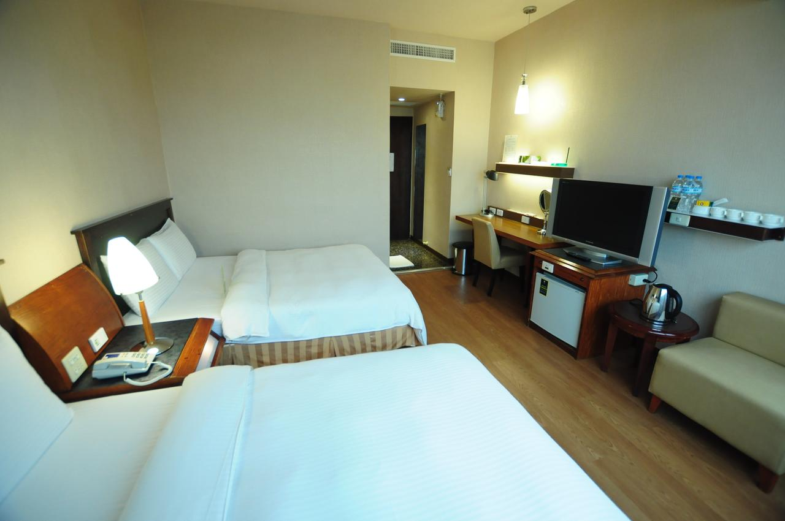
康橋商旅五甲館(3星)
地址：高雄Fengshan福德街143巷22號
康橋商旅五甲館距離捷運高雄站僅 10 分鐘步行路程。館內設有供應豐盛自助式早餐的餐廳。全館提供免費網路。
飯店建築現代化，距離高雄國際機場及旗津區僅 10 分鐘車程，距離高雄凱旋世貿展覽中心僅 5 分鐘車程，距離高雄市中心則有 20 分鐘車程。
客房裝有空調，室內裝飾典雅，並配有休息區、迷你吧及可收看有線頻道的平面電視。附設的私人衛浴內配有吹風機及免費盥洗用品。
館內設有 24 小時服務的接待櫃台。另亦設有商務中心、行李寄存處及觀光旅遊櫃檯。
飯店提供客房服務如房內用餐。早餐亦可應要求在於客房內供應。
Fengshan是觀光景點、便捷公共交通、當地美食的絕佳選擇。
情侶特別喜歡這個位置－並給他們的雙人旅行住宿體驗 8.2 分
旗津彩虹教堂
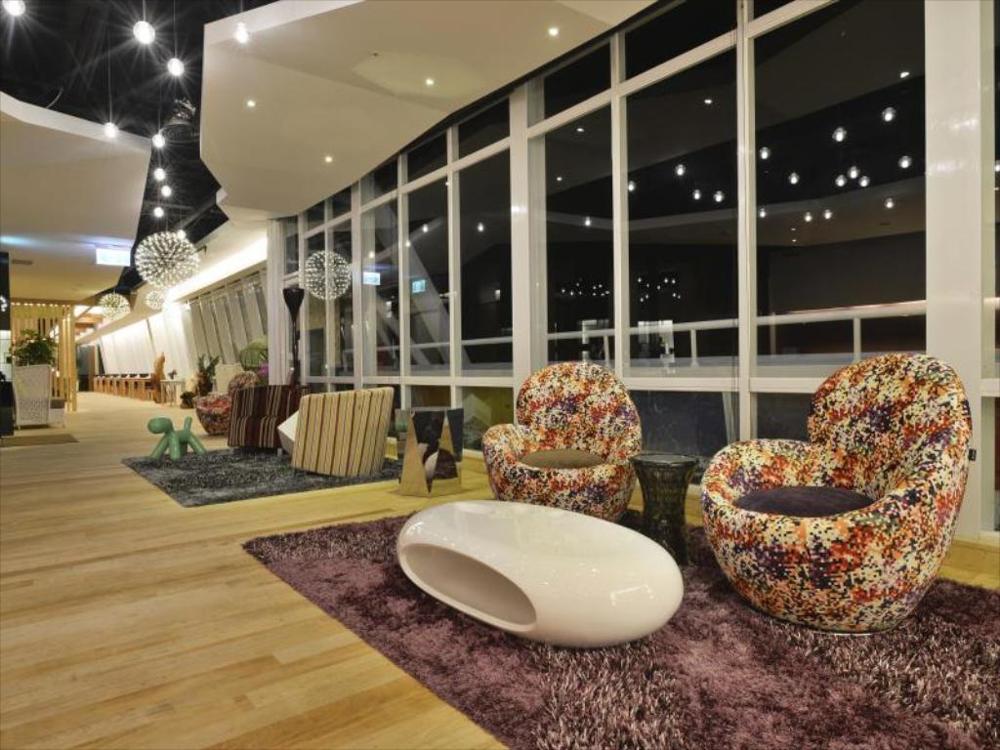
高雄旗津道沙灘酒店(4星)
地址：高雄市旗津區旗津三路1050號3樓
旗津道酒店開幕於2013，不僅為高雄市增添風采，也是旅客們的最佳選擇。 這裡距離市中心僅，離機場也不過35分鐘的路程。 住宿的客人能開心地遊覽Linshuigong, Chichin Island,
旗津海邊等經典景點。
在這家舒適的高雄市住宿中享受尊貴的服務與設施。
為了給客人提供更舒適和更便利的服務，住宿配備了所有房型皆附免費WiFi, 每日客房清潔服務, 可代收包裹, 郵寄服務, 代客叫車服務。
體驗高質感的舒適休憩空間，部分客房配有平面電視, 免費即溶咖啡, 免費茶包, 免費迎賓飲料, 寢具用品，讓您回房之後能好好地放鬆休息。
除此之外，住宿的各種娛樂設施一定會讓您在留宿期間享受更多樂趣。
一流的設施與得天獨厚的地理位置都讓旗津道酒店成為高雄市旅遊時的最佳住宿選擇。
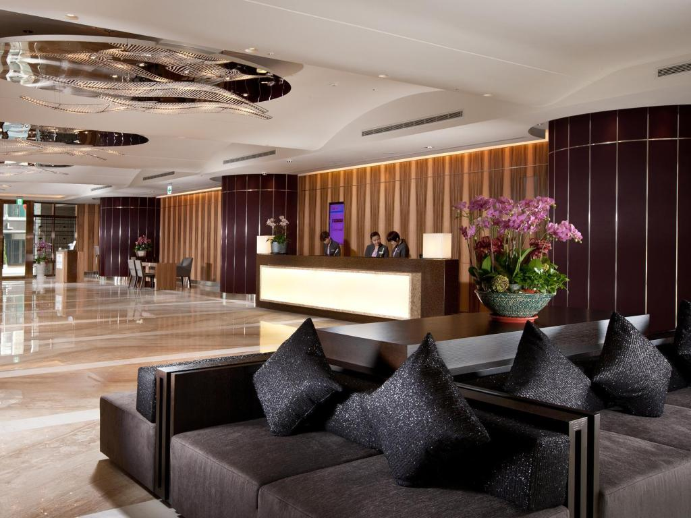
福容大飯店(4星)
地址：高雄市鹽埕區五福四路45號
想要盡情體驗高雄市的精彩， 福容大飯店 - 高雄絕對是您的最佳旅伴。 在這裡，旅客可輕鬆前往市區內各大旅遊、購物、餐飲地點。 住宿位置優越讓旅客前往市區內的熱門景點變得方便快捷。
相信福容大飯店 - 高雄的周到服務和一流設施會讓您此行終生難忘。 住宿安排了所有房型皆附免費WiFi, 24小時前台服務, 配有無障礙協助設備, 可寄放行李,
公共區域WiFi，旨在為客人提供最舒適的體驗。
您將能真切地感受到福容大飯店 - 高雄的特有的氛圍，它體現在每一間精心規劃的客房中。完善的貼心設施與服務隨處可見，如：平面電視, 地毯, 鏡子, 室內拖鞋, 獨立客廳，
在繁忙的一天過後，不妨到住宿的健身房,
桑拿三溫暖放鬆一下自己。 福容大飯店 - 高雄是來高雄市探索城市魅力，放鬆身心的理想住處。
棧貳庫
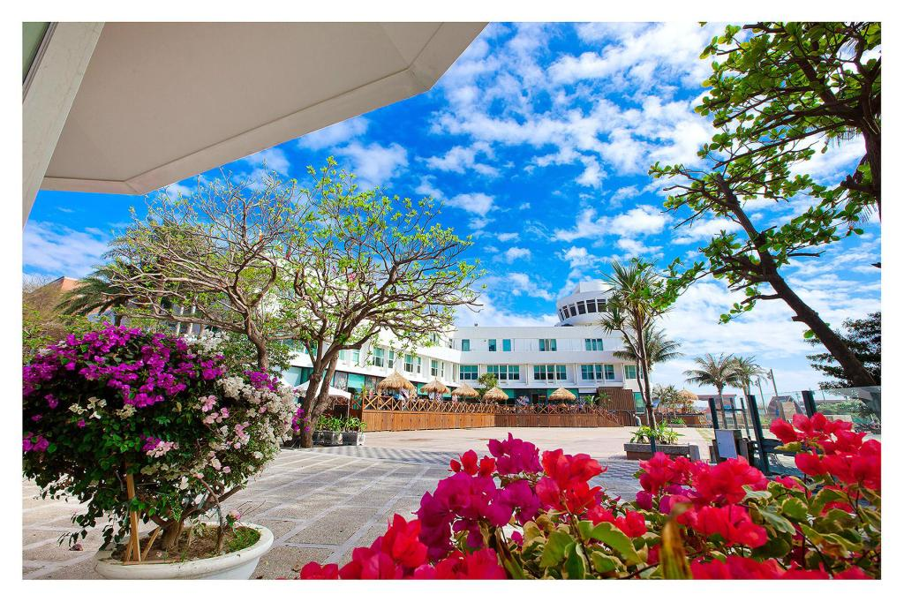
西子灣沙灘會館(4星)
地址:高雄市鼓山區蓮海路51號
西子灣沙灘會館座落於高雄市的鼓山區，是帶給您歡樂假期與放鬆身心的完美住宿選擇。 在這裡，旅客可輕鬆前往市區內各大旅遊、購物、餐飲地點。 從住宿到市內幾個主要地標相當方便，例如西子灣海灘, 西子灣,
North
Gate of Xiong Town。
相信西子灣沙灘會館的周到服務和一流設施會讓您此行終生難忘。 住宿內能享受到所有房型皆附免費WiFi, 24小時前台服務, 配有無障礙協助設備, 可寄放行李, 公共區域WiFi等一系列頂級設施。
此外，這裡的所有客房皆配有各種舒適的房內設施。許多房間甚至還提供了平面電視, WiFi, 免費WiFi, 禁菸房, 空調以滿足客人的需求。 住宿設有眾多娛樂設施，例如：專用海灘, 日光浴,
兒童遊戲區,
花園，都是放鬆身心的最佳選擇。 西子灣沙灘會館地理位置優越，能為客人提供一流服務。
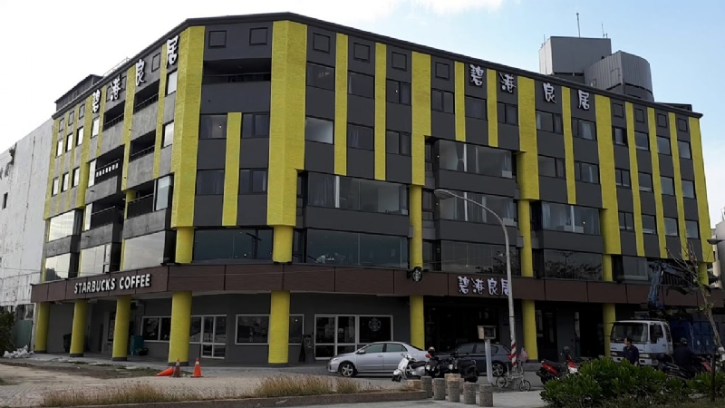
碧港良居商旅(3星)
地址：高雄市鼓山區哨船街31號
這間休閒風格的旅館座落在高雄港邊的哨船頭公園對面，步行至最近的捷運站需 12 分鐘，距離駁二藝術特區的藝廊 2 公里。
灰灰基地美術館
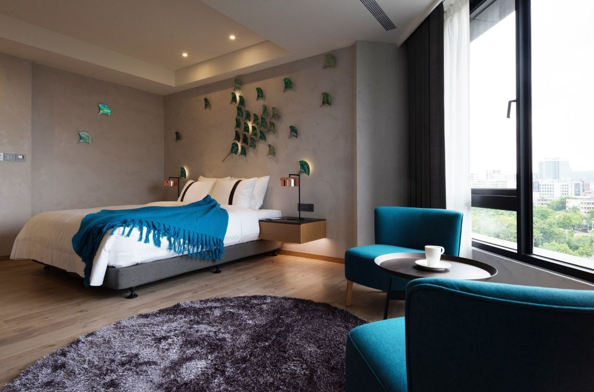
比歐緻居(4星)
地址：高雄市新興區中山一路14~26號
位於商業區的休閒旅館，步行 11 分鐘可到六合夜市，步行 18 分鐘可到高雄火車站，距離高雄市立歷史博物館 3 公里。
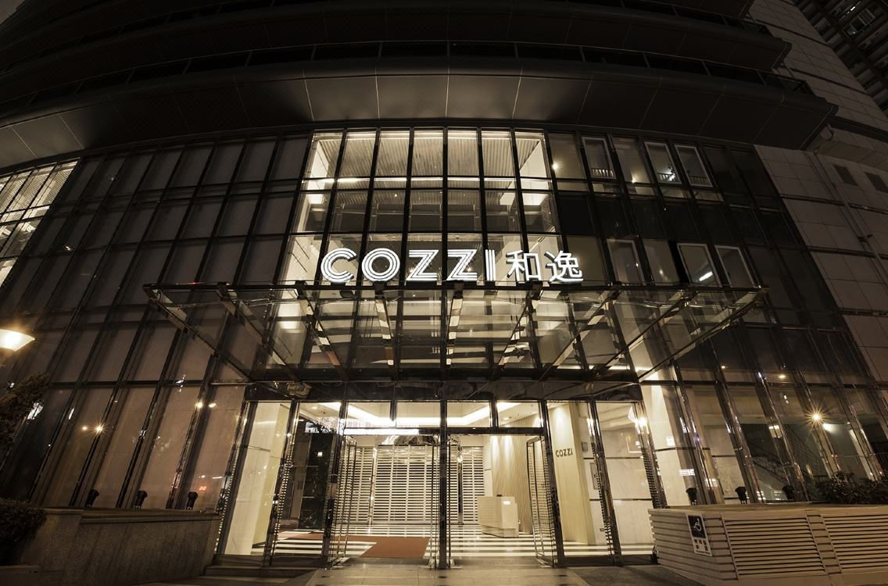
和逸飯店(高雄中山館)(5星)
地址：高雄市中山二路260號30樓
逸飯店(高雄中山館)位於熱鬧的三多商圈，可輕鬆前往高雄主要地標和景點；飯店地處高捷三多商圈站（3 號出口）旁，附近的購物場所包括新光三越、SOGO 百貨和高雄大遠百，步行即可輕鬆前往。
飯店提供無線 WiFi，並附設停車場。客房布置簡樸，均設有空調、舒適寢具、平麵有線電視、冰箱、電熱水壺和書桌。私人衛浴設有淋浴設施和浴缸，並備有免費盥洗用品和吹風機。
飯店設有 24 小時櫃檯，工作人員可隨時提供免費行李寄存服務。如有需求，飯店還可提供乾洗、洗衣、會議設施和傳真/影印等服務。
田寮月世界
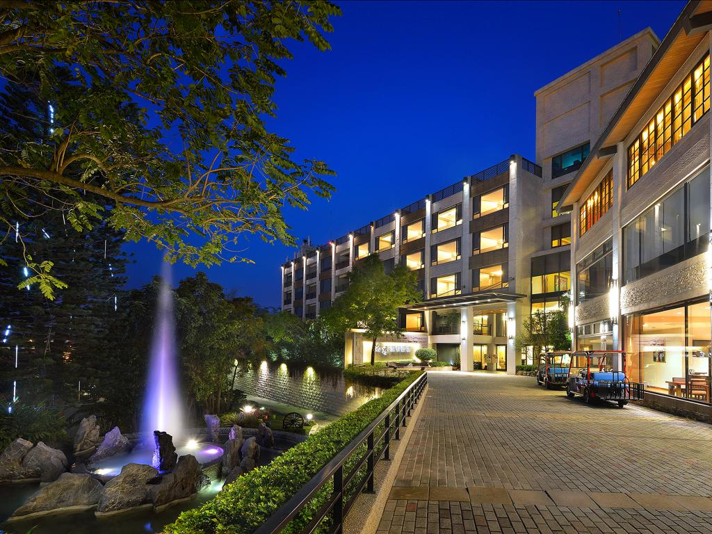
花季度假飯店(4星)
地址：高雄市田寮區崗北路111號
花季度假飯店坐落於田寮區的中心地帶，是遊覽高雄市的最佳住宿選擇。
離市中心僅80km的路程，能確保旅客快捷地前往當地的旅遊景點。
這家現代化住宿比鄰Alian Night Market, GuangdeTemple, Shitou Temple等熱門景點。
花季度假飯店一直致力於為您提供最尊貴的服務與一流的設施，確保您下榻期間愉快、愜意。
住宿的主要設施有所有房型皆附免費WiFi, 24小時保全, 可代收包裹, 專人辦理入住/退房服務, 代客叫車服務。
共有54間房間可供客人選擇，全部都給人安靜典雅的感覺。 健身房, 桑拿三溫暖, 溫泉, 室外游泳池, Spa能讓您玩足一整天，開心一整天。 花季度假飯店是來高雄市探索城市魅力，放鬆身心的理想住處。
大東藝術文化中心
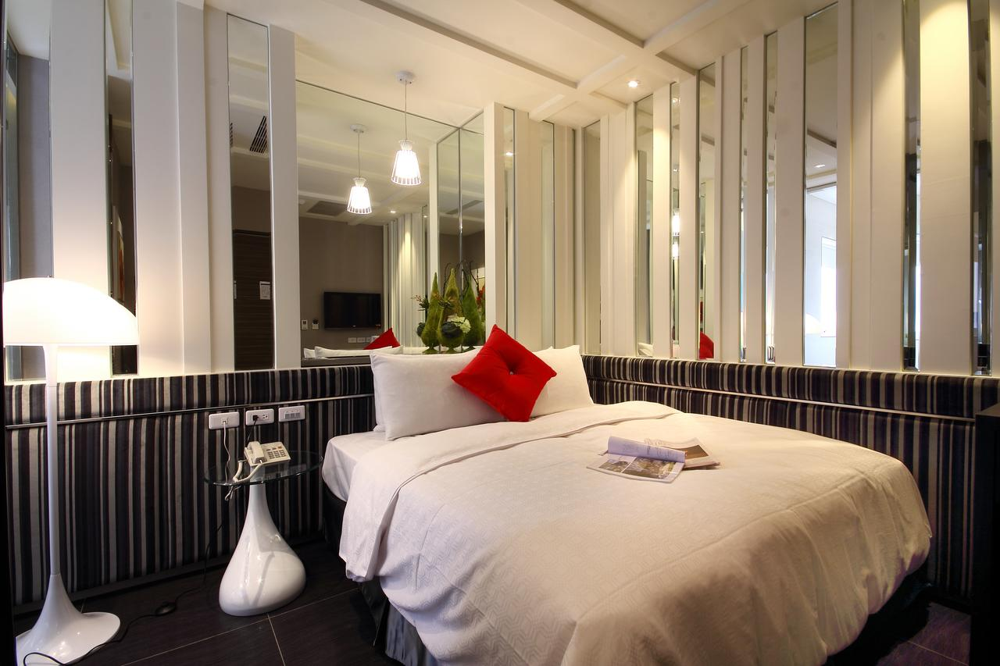
麗馨精品商旅(3星)
地址：高雄市鳳山區曹公路77號
麗馨精品商旅位於鳳山，距離鳳山車站僅 2 分鐘步行路程，現代化的客房裝潢雅緻，房內均可使用免費 WiFi。
從飯店步行 8 分鐘即可到達捷運鳳山站，方便客人搭乘大眾運輸遊覽城市。飯店距離衛武營都會公園則有 3 公里。
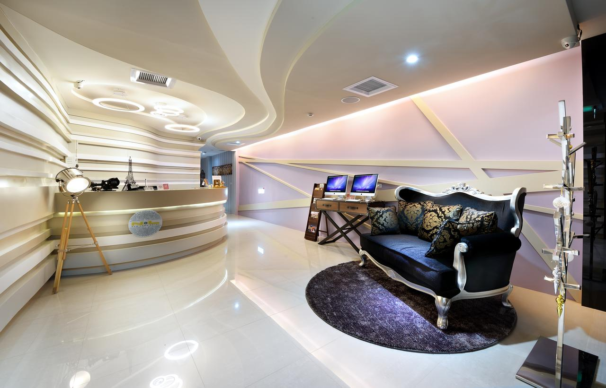
NL概念商旅(3星)
地址：高雄Fengshan文衡路18號
NL 概念商旅距離鳳山火車站僅有 1 分鐘步行路程，提供精品風格的客房、免費自行車租賃服務和免費 WiFi。
飯店距離捷運鳳山站 8 分鐘步行路程，距離六合夜市 15 分鐘車程，距離高鐵左營站約 20 分鐘車程。
客房均設有空調、平面有線電視、冰箱和電熱水壺。私人衛浴內備有免費盥洗用品。
NL 概念商旅設有 24 小時接待櫃台，並提供洗衣、行李寄存、旅遊行程安排和影印等其他服務。
Fengshan是觀光景點、便捷公共交通、當地美食的絕佳選擇。
情侶特別喜歡這個位置－並給他們的雙人旅行住宿體驗 8.2 分
衛武營國家藝術文化中心
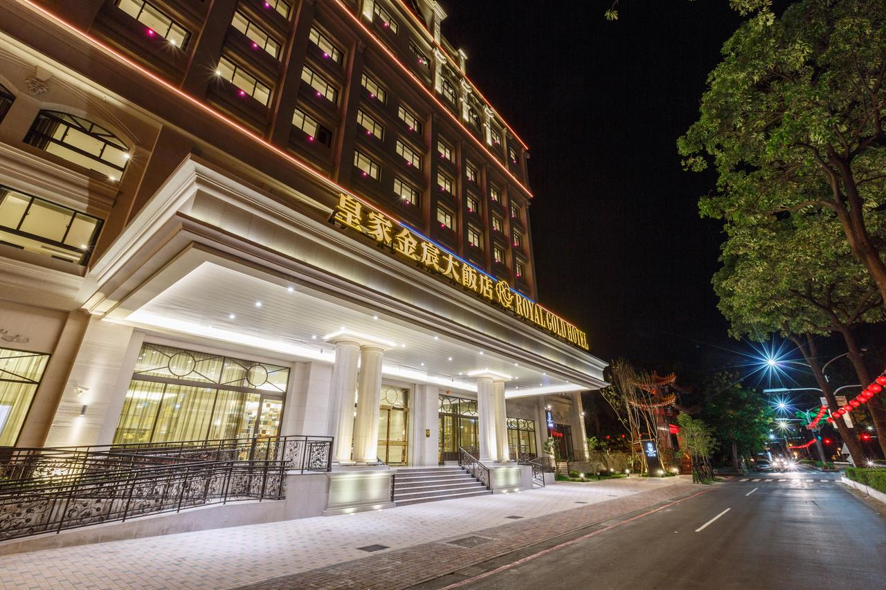
皇家金宸大飯店(4星)
地址：高雄鳳山區國泰路一段288號
皇家金宸大飯店是不錯的選擇，位於高雄鳳山區，提供舒適的住宿和一流的服務。飯店將迷人的現代魅力與經典的建築特色融合，方便客人前往城市地標。
飯店旁邊是鳳山溪自行車道，距離高雄市大東文化藝術中心騎車需約 5 分鐘，距離衛武營國家藝術文化中心約 5 分鐘，距離六合觀光夜市 6 公里，距離高雄覆鼎金保安宮也是 6 公里，距離高雄國際機場有 5
公里。
客房均舖有地毯，設有大型窗戶和現代化設施。位於 6 樓的客房適合攜帶兒童的客人入住。客人可以通過滑道直接前往 5 樓的室外遊樂場。
飯店提供免費自行車租賃服務，方便客人遊覽鄰近地區。您可以在蒸汽浴放鬆身心，或在健身房鍛煉身體。飯店可安排機場接駁服務。
阿雷佐餐廳非供應美味的牛排和西式沙拉，是客人聚會的理想場所。皇家中餐廳供應道地的當地美食，供客人品嚐美味佳餚。
鳳山是觀光景點、便捷公共交通、當地美食的絕佳選擇。
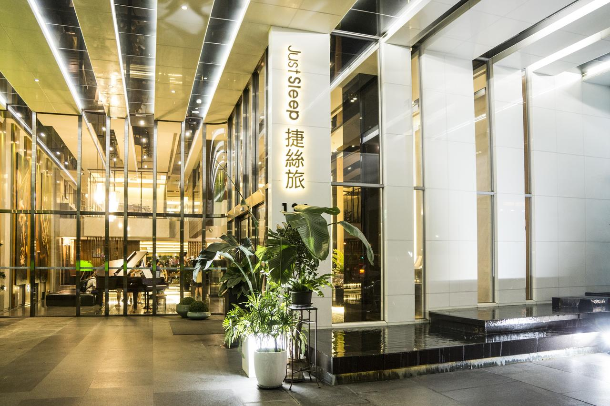
捷絲旅高雄中正館(4星)
地址：高雄苓雅區中正一路134號
捷絲旅高雄中正館距離捷運技擊館站為 4 分鐘的步行路程，館內設有 24 小時接待櫃台，提供簡約現代的客房。飯店另設有商務中心，並提供全館免費 WiFi。
飯店距離知名的新堀江購物商圈為 7 分鐘的開車車程，距離高雄火車站則是不到 15 分鐘的開車車程。
客房鋪有木質地板，並配有空調、衣櫃、休息區、個人保險箱和可收看衛星頻道的平面電視。房內亦提供電熱水壺和冰箱。私人衛浴內配有淋浴、吹風機和免費盥洗用品。
館內設有公共休息區，客人可於此放鬆休憩或閱讀報紙。觀光旅遊櫃檯可協助安排觀光行程，也提供行李寄存、洗衣和接駁服務。
苓雅區是海港、當地美食、居民友善的絕佳選擇。
情侶特別喜歡這個位置－並給他們的雙人旅行住宿體驗 8.6 分
KUBIC集盒
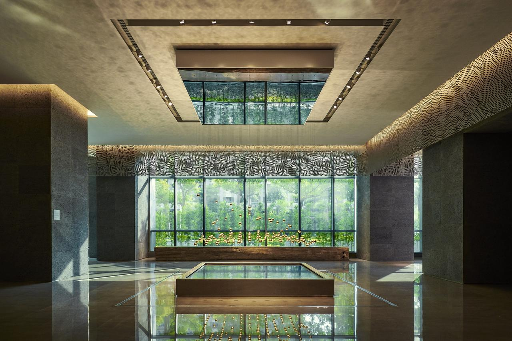
晶英國際行館 Silks Club(5星)
地址：高雄市前鎮區中山二路199號
晶英國際行館位於高雄，提供頂級設施、貼心服務以及時尚新穎的客房和套房，並設有屋頂無邊際游泳池。為提供住客更具隱私和便利性的住宿體驗，每層樓僅設有 6 至 10 間客房，並設有 3
部電梯供所有客人使用。
晶英國際行館距離高捷三多商圈站和新光碼頭步行僅 5 分鐘，距離高雄車站和高雄國際機場約 15 分鐘車程，距離高鐵左營站約 20 分鐘車程。
客房配有手工製作的床墊和豪華寢具、膠囊咖啡機、藍牙音響和電動窗簾。此外還主打免費迷你吧。私人衛浴設有品牌免治馬桶、進口浴缸和淋浴設施，並提供有機盥洗用品。
無邊際游泳池可供舉辦精彩的池畔派對。客人亦可於 SPA 和養生區放鬆休憩。健身中心內有私人教練可提供專業建議。24 小時櫃台提供行李寄存服務。
UKAI 亭供應各式美食、鐵板燒、美酒和飲品，提供別具一格的用餐體驗。
前鎮區是觀光、觀光景點、風景的絕佳選擇。
情侶特別喜歡這個位置－並給他們的雙人旅行住宿體驗 9.3 分
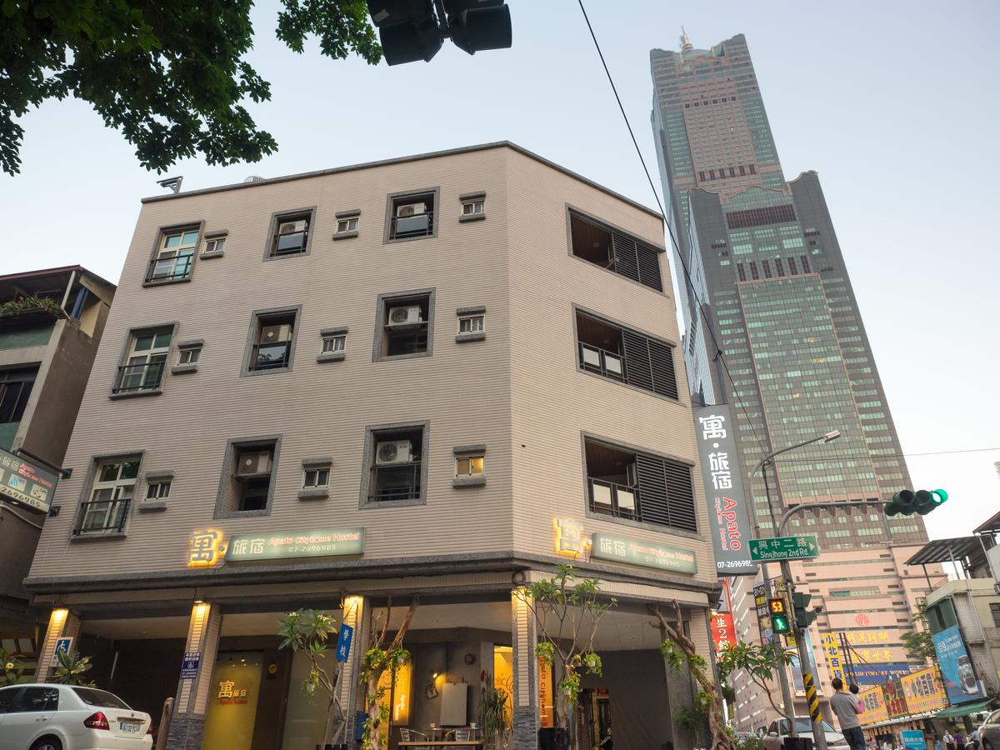
寓‧旅宿 Apato Cityhome(3星)
地址：高雄市苓雅區自強三路94號
寓旅宿位於高雄，距離高雄市立歷史博物館約 1.9 公里，距離駁二藝術特區約 2 公里。全館提供免費 WiFi，並設有免費私人停車場。
寓旅宿距離六合觀光夜市約 2.1 公里，距離旗津輪渡站約 3.1 公里。最近的機場是高雄國際機場，距離約 7 公里。
每間客房都裝有空調，並配備平面電視，可收看有線頻道。客房皆設有落地窗和陽台。房內設有電熱水壺和冰箱。房內的私人衛浴設有淋浴設施。另備有免費盥洗用品和吹風機，提供客人舒適的住宿體驗。
館內設有觀光旅遊櫃檯，亦備有自行車供客人免費使用，也提供租車服務。
苓雅區是海港、當地美食、居民友善的絕佳選擇。
情侶特別喜歡這個位置－並給他們的雙人旅行住宿體驗 9.3 分
高雄忠烈祠
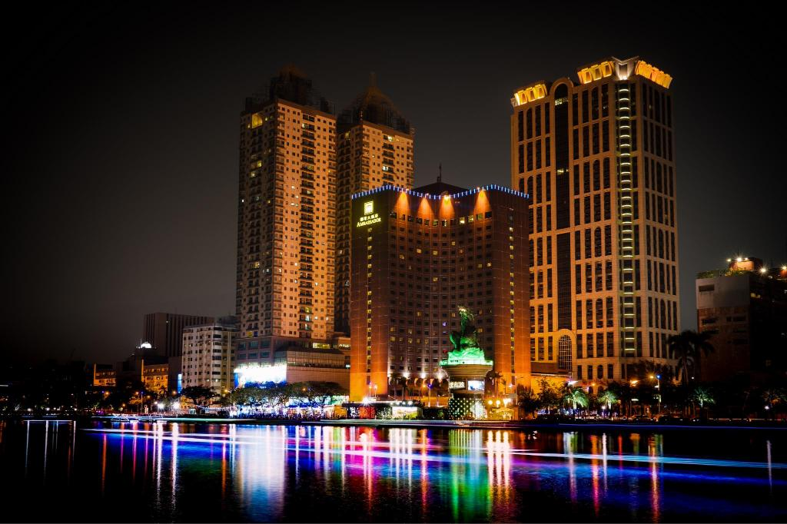
高雄國賓大飯店 (前金)(4星)
地址：高雄市前金區民生二路202號
想要盡情體驗高雄市的精彩， 國賓大飯店絕對是您的最佳旅伴。
離市中心僅有1 km，旅客可以盡情享受市區內的迷人風景。 這家現代化住宿比鄰高雄市電影圖書館, 愛河, Mary's Food Ltd.等熱門景點。
住宿為使客人感到賓至如歸，致力提供最優質的服務和最優良的設施。
住宿為了確保每位客人住宿期間都能獲得便利的服務，提供了24小時送餐服務, 所有房型皆附免費WiFi, 24小時前台服務, 配有無障礙協助設備,
可寄放行李等設施和服務。
這裡設有453間精美的客房，其中部分房型配有平面電視, 獨立客廳, WiFi, 免費WiFi, 禁菸房。 住宿的娛樂設施相當齊全，包括熱水浴池, 健身房, 桑拿三溫暖, 室外游泳池, Spa。
國賓大飯店是來高雄市旅遊的最佳住宿，為您提供一站式高品質服務。